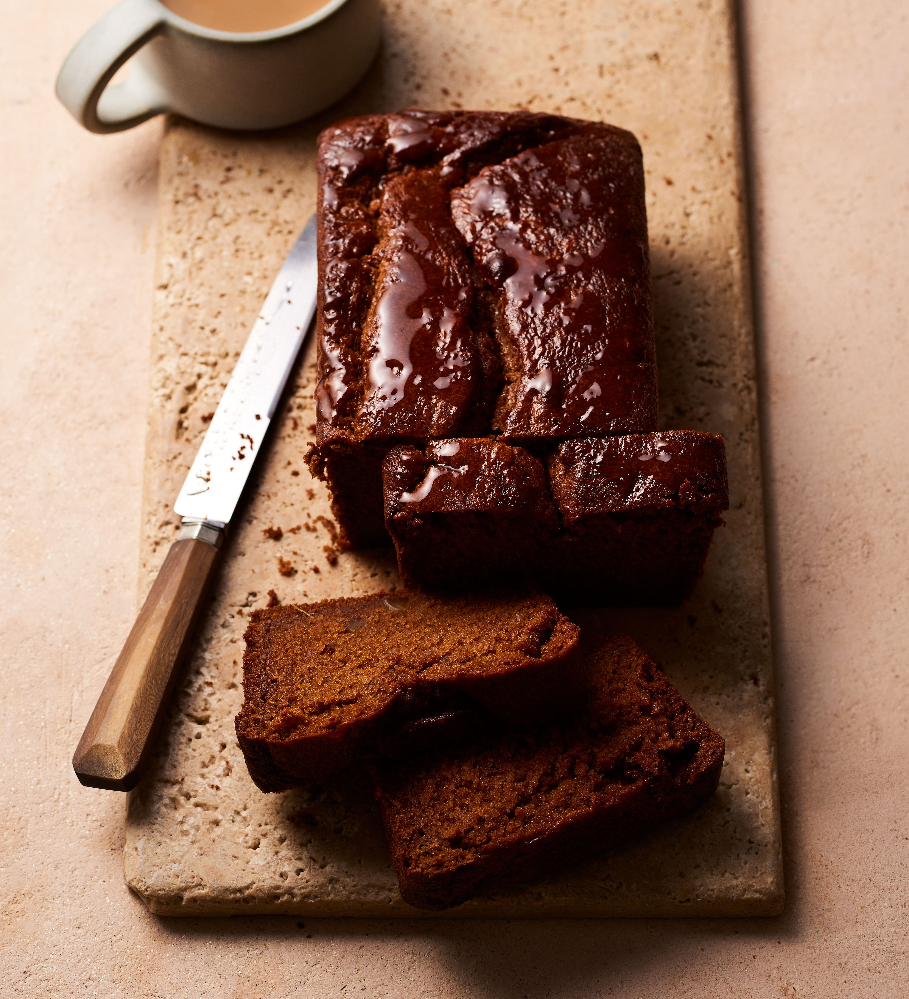

Sticky ginger loaf cake

steps to make the recipe
- Heat the oven to 180C/160C fan/gas 4. Butter and line a 2-litre loaf tin. Put the butter, honey, treacle, chopped stem ginger and ginger syrup in a small pan over a low heat until the butter has melted. Set aside to cool for a few minutes, then pour in the milk and leave to cool for around 15 mins.
- Sift the flour, bicarb and spices into a large bowl, then pour in the milk mixture, stirring to combine. Beat in the egg, then tip the mixture into the prepared tin. Bake in the oven for 1 hr, or until the cake is cooked through and a skewer inserted into the centre comes out clean. Leave to cool in the tin for 15 mins, then turn out to cool completely on a wire rack.
List of the ingredients
- 200g butter , plus extra for the tin
- 100g honey
- 100g black treacle
- 2 balls of stem ginger from a jar, chopped, plus 2 tbsp syrup
- 225ml milk
- 275g self-raising flour
- 1 tsp bicarbonate of soda
- 1 tsp ground cinnamon
- 1 tsp freshly grated nutmeg
- 1 tbsp ground ginger
- 1 egg